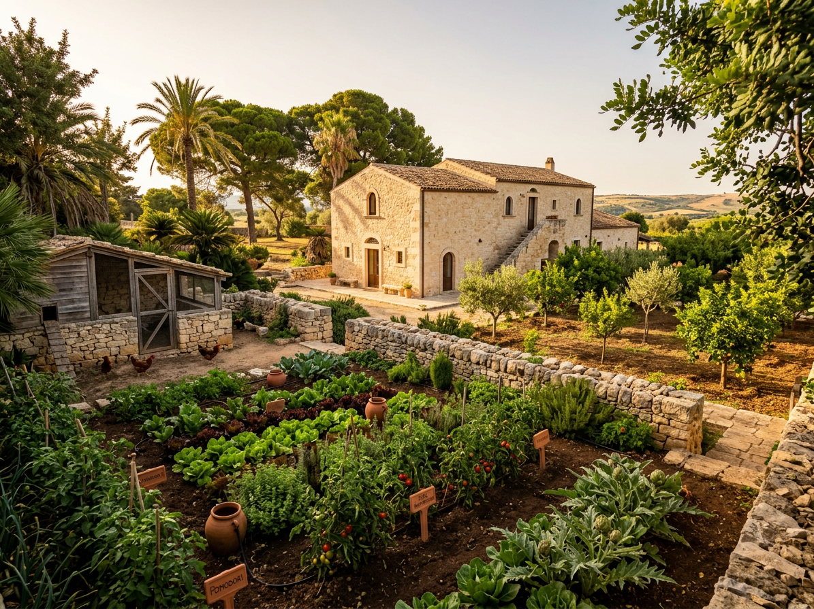

NATURE
Jardin & Potager
Au cœur du riad, le jardin n’est pas un décor. C’est un espace vivant, ordonné et productif, fidèle à la tradition marocaine de l’oasis intérieure.

Le patio et le bassin
Le patio central, avec son bassin d’eau et ses plantations, structure la vie de la maison. L’eau rafraîchit, le silence se recueille, la lumière filtre à travers les plantes et les ombrages.

Le potager et l’autonomie
Un potager productif, des arbres fruitiers et des herbes aromatiques nourrissent la table commune. Le travail de la terre fait partie de la formation et de la responsabilité partagée.

Ombre, parfum, silence
Orangers, citronniers, jasmin, rose de Damas, menthe et plantes grimpantes composent un paysage sensoriel discret. Le jardin est aussi un lieu de promenade, de lecture et de recueillement.